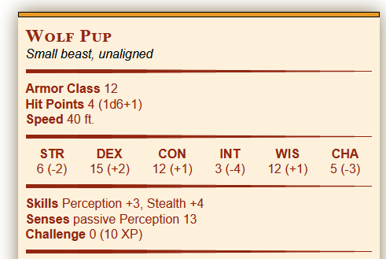

Dungeons and Dragons Tools and Calculators
On this page you'll find a suite of tools and calculators I made to help the avid 5th edition Dungeons and Dragons player.
Monster Scaler
My main focus these days, this is a calculator for Dungeons and Dragons 5th Edition that takes an existing monster and scales it up or down to a different Challenge Rating, or CR. Started because I play a druid who likes to summon and shape shift, and I was frustrated by the gaps in available creatures at certain CRs. At the moment it has only a few simple beasts, but I plan to expand it by adding more creatures, and potentially the ability for users to create and edit their own creatures.
I've recently expanded it with a (work in progress) sidekick builder which allows the player to select a monster and start building it into a sidekick. Selected monsters are automatically scaled to 1/2 CR, the maximum allowed per sidekick rules, allowing players to choose higher CR monsters not normally eligible as sidekicks (or give lower CR creatures a little boost before sidekicking them). The sidekick page can be found here.
Fantasy World Generator

Inspired by Nested, this is a random generator that allows a user to generate a random fantasy world (or several). It starts by generating a high level parent node (which could be anything from a planet to an entire multiverse) with several children. When a child node is expanded additional child objects are randomly generated as needed.
The goal here was twofold: To allow users to generate random content at any level that is required, from entire worlds to NPCs in a tavern, but also to allow them to manually enter existing content and use random generation to fill in the gaps. At the moment it is very far from complete and is in need of many more objects, once I get back to it. While it was created with Dungeons and Dragons in mind, it is currently rule agnostic.
Spellbook Manager
Also intended for Dungeons and Dragons 5th Edition (guess what I've been doing with my spare time when not on Github), this is a tool I created to help my very wizard heavy party identify spells they could share, and the associated costs. Spellbooks can be entered and the tool will list what spells can be copied into one book from the others, as well as the time and gold required to do so. Unlike most of these projects, this one is actually reasonably complete.